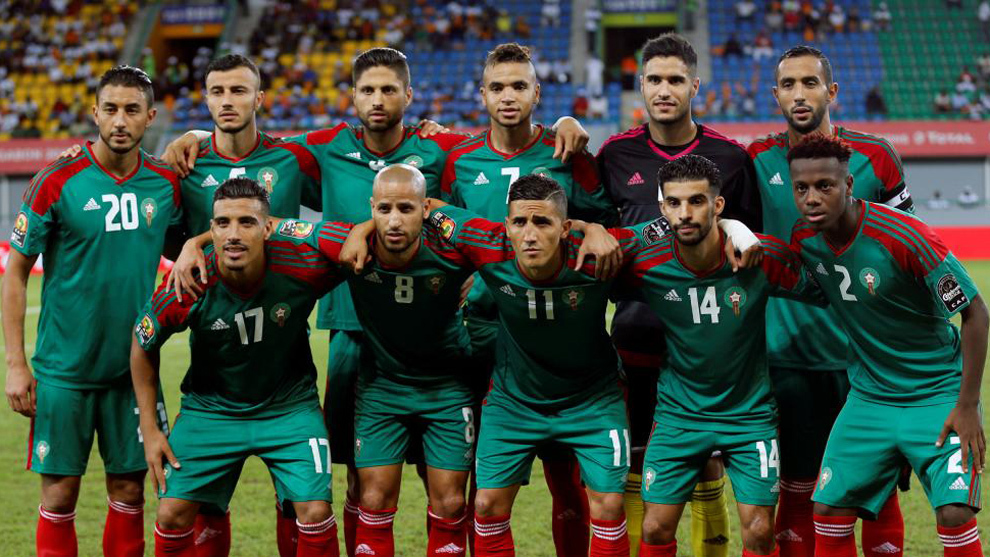

Ranking FIFA: 23° (octubre 2022).
¿Cómo se clasificó al Mundial? Venció en la llave decisiva a la República Democrática del Congo por 5-2 en el resultado global.
Rendimiento en 2021 (G-E-P): 19-2-1 (52 GF, 7 GC, +45)
Rendimiento en 2022 (G-E-P): 8-3-2 (22 GF, 11 GC, +11)v
Bono; Achraf Hakimi, Romain Saiss, Nayef Aguerd, Adam Masina; Selim Amallah, Sofyan Amrabat, Imran Louza; Ayoub El Kaabi, Youssef En-Nesyri, Sofiane Boufal
Nacionalidad: marroquí.
Edad: 46 años.
Contratado: 31 de agosto de 2022.
Récord en el cargo (G-E-P): 1-1-0
Títulos en el cargo: Ninguno.
Victoria más notable: 2-0 a Chile, amistoso en 2022.
1930 Uruguay -
1934 Italia -
1938 Francia -
1950 Brasil -
1954 Suiza -
1958 Suecia -
1962 Chile -
1966 Inglaterra -
1970 México 14°
1974 Alemania -
1978 Argentina -
1982 España -
1986 México 11°
1990 Italia -
1994 Estados Unidos 23°
1998 Francia 18°
2002 Corea y Japón -
2006 Alemania -
2010 Sudáfrica -
2014 Brasil -
2018 Rusia 27°
